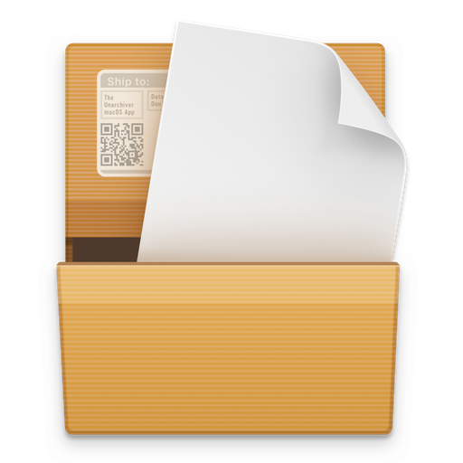
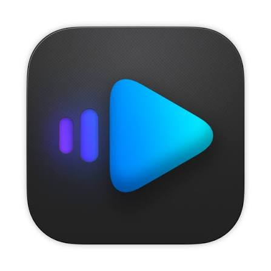
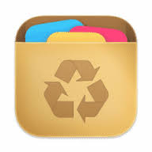
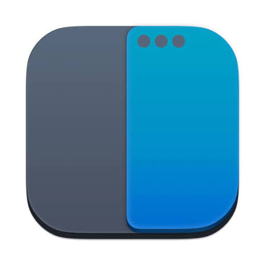
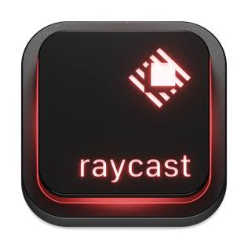
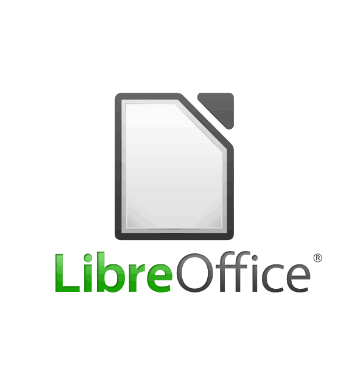
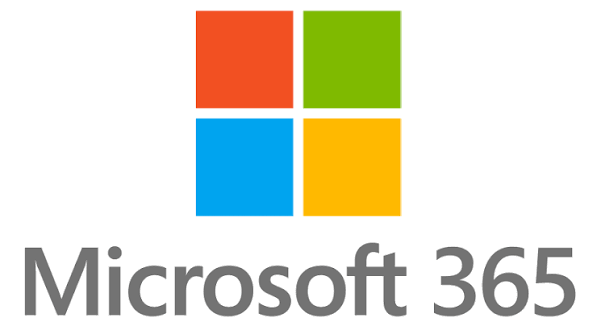

Le Mac est déjà bien équipé. Ces quelques apps, gratuites pour la plupart, le rendent encore plus agréable.
Très pratique : envoie photos, vidéos et documents entre votre Mac et n’importe quel appareil (téléphone Android, iPhone, PC Windows, Linux), sans câble ni compte. Les deux appareils doivent simplement être sur le même Wi-Fi.
Télécharger sur localsend.org (nouvel onglet)Déjà sur le Mac, pour échanger avec un iPhone, un iPad ou un autre Mac. Dans le Finder, cliquez sur AirDrop dans la barre latérale. Pour les appareils Android ou Windows, utilisez LocalSend.

Ouvre les fichiers compressés que le Mac ne sait pas lire seul, comme les .rar ou les .7z.
Télécharger sur theunarchiver.com (nouvel onglet)Lit presque tous les formats de vidéo et d’audio, même ceux que l’app QuickTime refuse.
Télécharger sur videolan.org (nouvel onglet)
Une alternative à VLC, pensée pour le Mac, avec une interface plus moderne.
Télécharger sur iina.io (nouvel onglet)
Désinstalle une app proprement, avec tous les fichiers qu’elle a laissés derrière elle. Glissez l’app dans sa fenêtre, puis cliquez sur Supprimer.
Télécharger sur freemacsoft.net (nouvel onglet)
Place les fenêtres d’un raccourci clavier : moitié gauche, moitié droite, plein écran… Idéal si vous aimiez ranger vos fenêtres sur Windows.
Télécharger sur rectangleapp.com (nouvel onglet)Garde l’historique de tout ce que vous copiez. Vous retrouvez un texte copié il y a une heure en un raccourci.
Télécharger sur maccy.app (nouvel onglet)
Une version très enrichie de la recherche Spotlight : calculatrice, conversions, gestion des fenêtres et des centaines d’extensions. Plutôt pour quand vous serez à l’aise.
Télécharger sur raycast.com (nouvel onglet)Pages, Numbers et Keynote sont déjà installés et gratuits. Si vous avez besoin d’autre chose :

Une suite bureautique complète et libre (texte, tableur, présentations) qui ouvre les fichiers Word, Excel et PowerPoint.
Télécharger sur libreoffice.org (nouvel onglet)
Word, Excel, PowerPoint, Outlook et OneDrive, en version Mac. Vérifiez d’abord si votre école ou votre travail vous le fournit.
Voir sur microsoft.com (nouvel onglet)